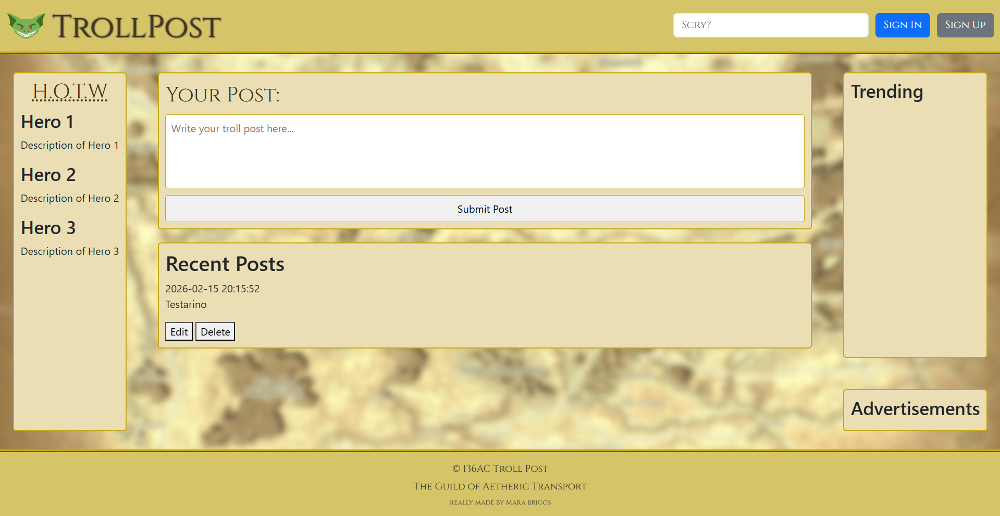

Grizzly Gears Robotics
Nov 2025 - Present
Serving as a programming mentor for high school outreach, providing guidance on Java-based control systems and vision tracking using Lime Light.
View Outreachany pronouns
Software Developer, Game Design Hobbyist, FRC Mentor
I am Amara Iona Briggs (Mars), a software developer focused on engineering user-centric applications and hardware integrations. Currently pursuing Computer Programming at Georgian College, I bridge the gap between robust back-end logic and intuitive front-end design.
My technical approach is rooted in curiosity and passion, whether I am optimizing web performance, studying new frameworks or mentoring the next generation of engineers through robotics outreach.
When I'm not writing code, I serve as a part-time mentor for Grizzly Gears (FRC Team 9580), helping students navigate the complexities of Java and mechanical systems. I also maintain a specialized "Pi-Crawler" hardware project, exploring the intersection of Python and robotics.
Nov 2025 - Present
Serving as a programming mentor for high school outreach, providing guidance on Java-based control systems and vision tracking using Lime Light.
View OutreachMarch 2026
An intelligent study aid utilizing OpenCV and TensorFlow to monitor engagement levels and promote healthy ergonomic habits during long coding sessions.
Source Code
April 2026
A social media that came from a thought, "What if D&D had a myspace".
View Project